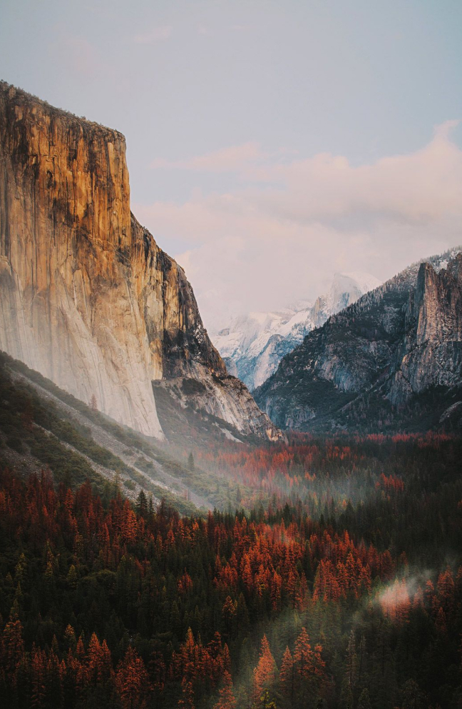

Yosemite Hikes
Make every adventure unique



Home of Yosemite National Park
Yosemite National Park in beautiful Mariposa County welcomes you to experience this majestic park in all four seasons. Explore things to do, such as seeing awe-inspiring vistas, granite icons, breath-taking waterfalls, and discovering fascinating history, all while staying in Yosemite and Mariposa County.
Whether it’s your first time visiting Yosemite National Park or you’re a seasoned veteran traveler, you’ll always find something new to do here. Search for events, lodging, dining, directions and more.
Best Hikes in Yosemite National Park
Looking for a great trail in Yosemite National Park, California? AllTrails has 254 great
hiking trails, trail running
trails, views trails and more, with hand-curated trail maps and driving directions as well as detailed reviews
and
photos from hikers, campers, and nature lovers like you. Gearing up for a challenge? There are 114 hard trails
in
Yosemite National Park ranging from 2.1 to 211 miles and from 3,828 to 14,475 feet above sea level. Start
checking them
out and you'll be out on the trail in no time!

1000+ trails. Million researchers. Endless memories.
The beauty of nature doesn’t need to be hard to find. Our goal is simple - build the
largest collection of hand-curated
trail guides, so you can explore the outdoors with confidence. Anytime. Anywhere.
Choose your route


Plan your best route now
Join a community of 20 million outdoor explorers
"/"